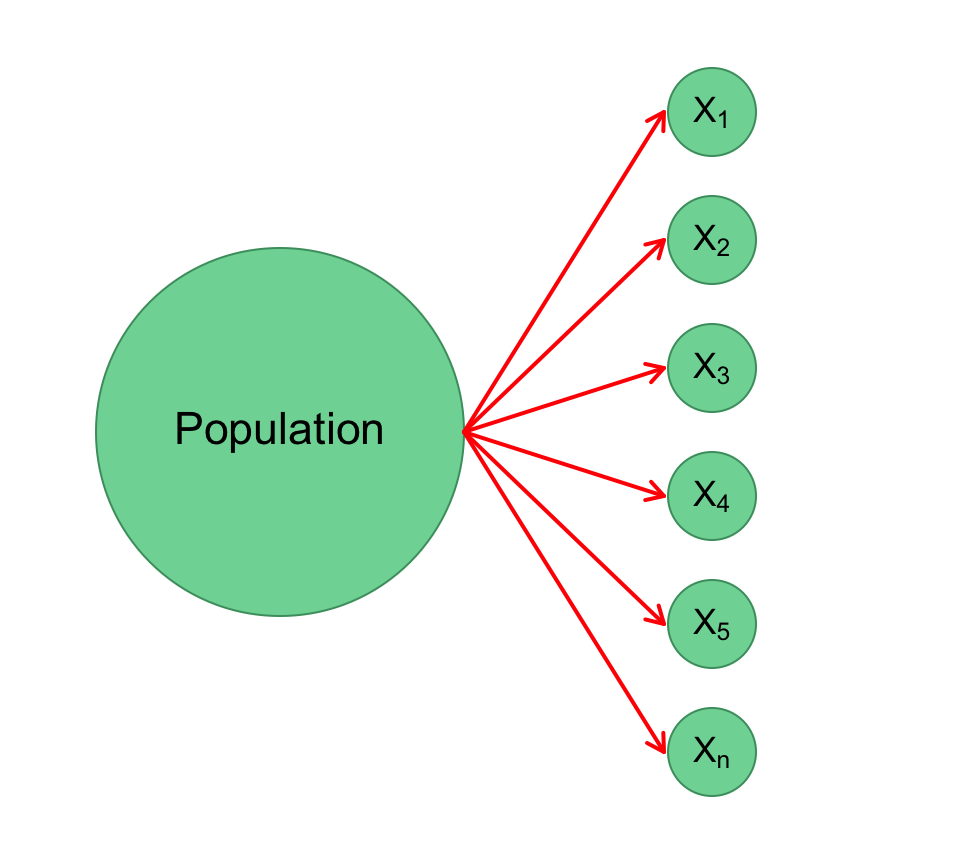
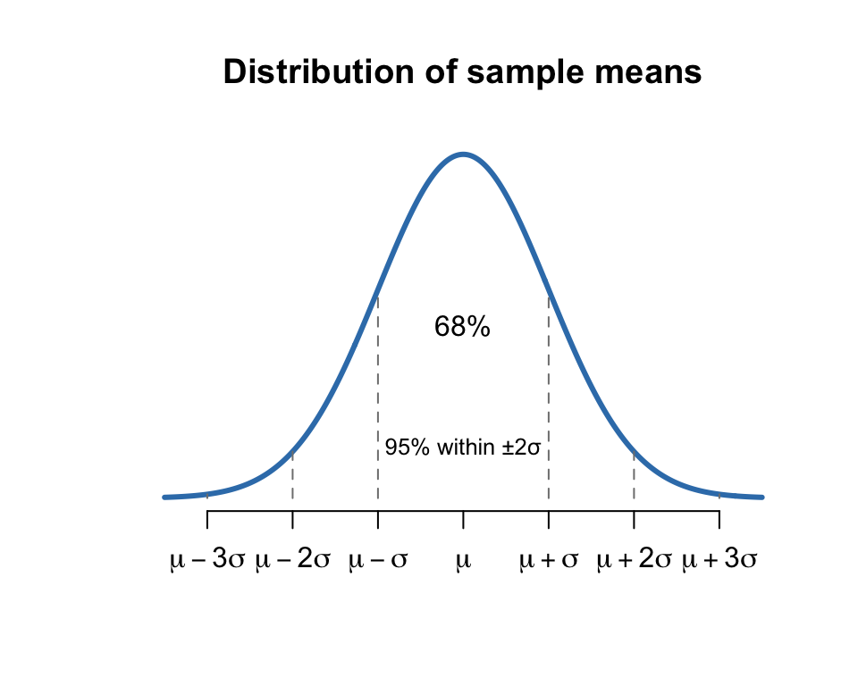
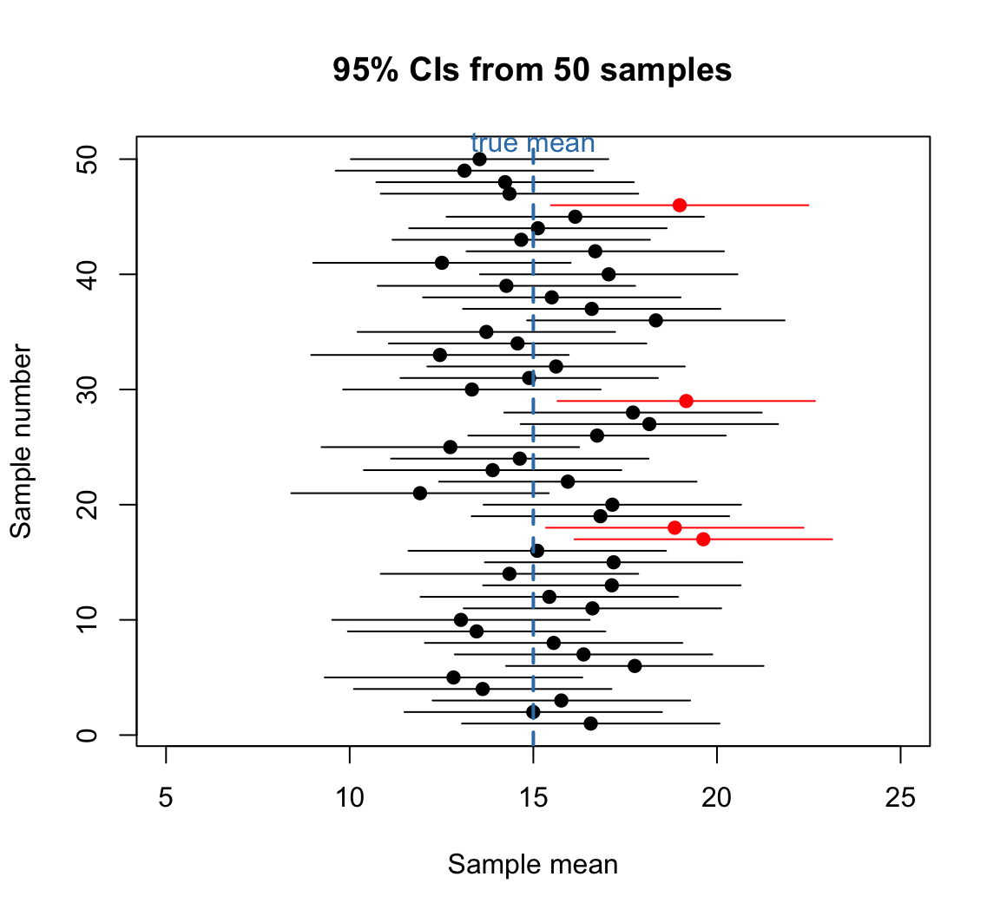
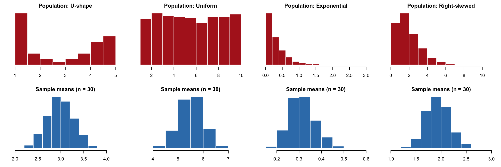
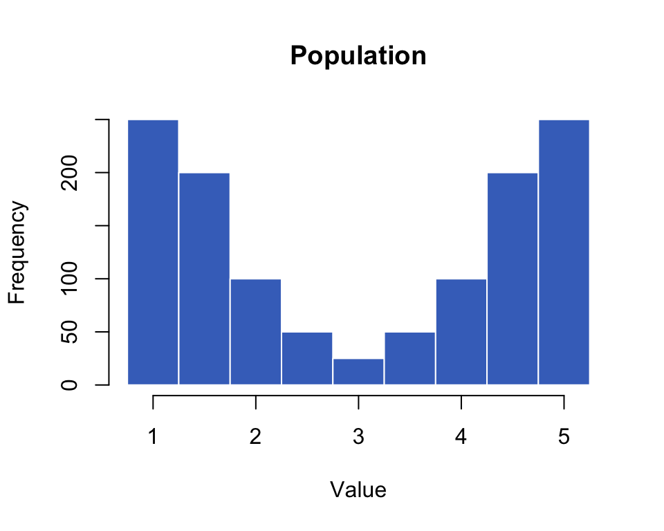
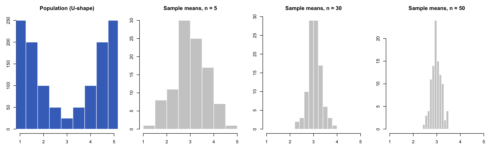
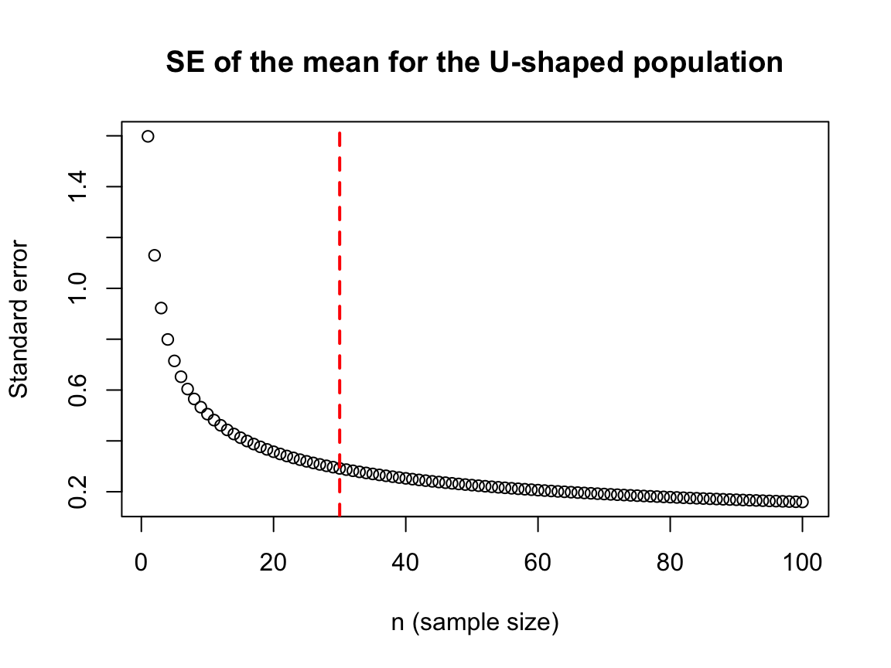

PSYC 2020-A01 / PSYC 6022-A01 | Lab 6
Learning objectives: R: sample(), set.seed(), for loops, rnorm() / runif() / rexp()
Statistics: Population vs. sample vs. sampling distributions, Central Limit Theorem, standard error
| Data (what we have) | Research question is about… (what we want to know) |
|---|---|
| Randomly selected 1000 people’s IQ in Georgia | IQ of people living in GA |
| 30 students’ height in the Psych department | Height of students in Psych |
| Randomly selected 100 GT students’ sleeping hours | Sleeping time of students at GT |
| Product ratings from 300 people | Product satisfaction for customers |
We are interested in population properties (i.e., population parameters)
We infer information about the population from the data we have
Population parameters are…
○ Assumed to be constant (fixed)
○ Unknown and unknowable
○ Estimated using statistics
ⓘ μ (mu; mean) and σ (sigma; standard deviation) are parameters of the normal distribution; different distributions have different parameters
Statistics is the science of testing hypotheses about values of these (and other) parameters
○ Point estimation
○ Interval estimation
Point estimation
A single value (point) estimate of the parameter’s true value
○ e.g., \(\hat{\mu} = 52\)
○ \(\hat{\mu}\) and \(M\) both refer to the sample estimate of the mean
Interval estimation
A range of values that may contain the population parameter
○ e.g., \(\hat{\mu} = (100, 150)\)
○ Usually reported with a confidence level (e.g., 95%) to indicate the method’s reliability
If we drew 100 random samples and computed a 95% confidence interval (CI) for each one, we would expect about 95 of those 100 CIs to include the true population mean
A sample consists of multiple observations drawn from the population
\[X_1, X_2, X_3, \dots, X_{n}\]
We summarize the sample with its sample mean
\[\bar{X} = \frac{\sum x}{n}\]

Multiple means from multiple samples
\[\bar{X}_1, \bar{X}_2, \bar{X}_3, \dots\]
The distribution of those means is the sampling distribution
. . .
…and it is (approximately) a normal distribution!
○ Unimodal, symmetrical
○ Mean = median = mode
○ 68% / 95% / 99.7% within 1 / 2 / 3 SDs


Each dot is the mean of one sample; each line is that sample’s 95% CI
Red intervals don’t contain the “true” value of the mean
If the dots dropped to the ground, they would pile up into a normal distribution
○ More dots around the middle
○ Fewer dots toward the tails
Simulated to mirror textbook Figure 2.8 (p. 46)
It allows us to…
○ specify a range of scores the population mean is expected to fall within
○ determine how accurate our sample mean is in estimating the true population mean
○ determine how likely an observed statistic (e.g., a sample mean) is, assuming some hypothesized parameter holds in the population
Note
If people in GA have an average IQ of 100, what is the probability that 100 randomly selected people in GA have a mean IQ of 120?
Definition: if you take sufficiently large random samples from the population, then the distribution of the sample means will be approximately normally distributed
ⓘ It doesn’t have to be a mean for the CLT to hold. It can also be a sum (a sum is part of calculating the mean!)
Two things I want to point out:
Regardless of the population’s skewness / kurtosis, the distribution of the means becomes normal

○ U-shape, uniform, exponential, extremely skewed… whatever the original distribution is

Population: \(N\) = 1225, \(\mu\) = 3, \(\sigma\) = 1.6
| Sample | Mean | SD |
|---|---|---|
| Sample 1 | 3.06 | 1.58 |
| Sample 2 | 3.08 | 1.66 |
| Sample 3 | 2.99 | 1.61 |
| Sample 4 | 2.95 | 1.62 |
| Sample 5 | 2.80 | 1.71 |
| Sample 6 | 2.84 | 1.66 |
| Sample 7 | 2.87 | 1.64 |
| Sample 8 | 3.00 | 1.58 |
| Sample 9 | 2.84 | 1.54 |
| Sample 10 | 2.96 | 1.64 |
Sampling with \(n\) = 100: the 10 means average 2.938 with an SD of only 0.099
How does the sampling distribution change as \(n\) (observations per sample) increases?

The bigger \(n\) is, the narrower the sampling distribution

Large reductions in the standard error as \(n\) increases from 1 to about 30
Beyond about \(n\) = 30, there is not as much benefit to adding more subjects in terms of standard error
The variance of the sampling distribution of the mean is always smaller than the original population variance
○ Less variability in the sample means than in the population
○ As the sample size increases, the sampling distribution becomes narrower
Because the original variance is divided by \(n\), the sample size:
| mean | variance | standard deviation |
|---|---|---|
| \(\mu_{\bar{X}} = \mu\) | \(\sigma^2_{\bar{X}} = \dfrac{\sigma^2}{n}\) | \(\sigma_{\bar{X}} = \dfrac{\sigma}{\sqrt{n}}\) |
The SD of the sampling distribution is called the standard error (SE)
Intuition: when the sample size equals the population size, the sampling variance is essentially 0 — no error in the estimate
Two factors we’re going to test:
Different original distributions
○ If the data are not normal (e.g., uniform or exponential), is the sampling distribution still normal?
Different sample sizes
○ When each sample has 5, 30, or 200 observations
rep(x, times) repeats a value
○ rep(5, 250) = the number 5, 250 times
Type ?rep in the console for more info
What does this population look like? Is it normal?
sample()Extract a sample from a given dataset
sample(dataname, size = n, replace = T)
○ size = number of observations n
○ replace = TRUE (or T): sampling with replacement
○ replace = FALSE (or F): sampling without replacement
set.seed() makes random results reproducible: same seed, same samples
10 samples of \(n\) = 100, one mean each
Compare with hist(Ushape, xlim = c(1, 5))
Typing this out gets old fast…
What if we want 1,000 samples?
for LoopsRepeat the same code many times
○ N = number of sample sets; n = number of observations per sample (sample size)
○ NA is a placeholder we fill in later
ⓘ Every run gives different values: it’s random! Add set.seed() first to make it reproducible
\(N\) = 100 sample sets each time; only \(n\) changes
Change n and re-run: what happens to
○ the shape?
○ the spread (sd(), i.e., the SE)?
Check: \(\sigma / \sqrt{n}\) = sd(Ushape) / sqrt(n)
The number of sample sets does not change the essential properties of the sampling distribution
○ The sampling distribution is (hypothetically) fixed once the sample size n is set
○ More samplings just make the visualization easier
| Function | Generates n random numbers from a… |
|---|---|
rnorm(n, mean = , sd = ) |
normal distribution with the specified mean and SD |
runif(n, min = , max = ) |
uniform distribution with the specified min and max |
rexp(n, rate = ) |
exponential distribution with the specified rate (λ) |
We saw rnorm() in Lab 4; runif() and rexp() work the same way
Population: normal, σ = 10
Sampling distribution: centered at the same mean, but much narrower
Predicted SE: \(10 / \sqrt{30} \approx\) 1.83
Population: flat, not normal at all
Sampling distribution: normal!
Population: extremely right-skewed
Sampling distribution: still normal!
Try n = 5 instead of 40: is it still normal? (Remember “sufficiently large”)
Population distribution
○ The distribution of the population of research interest
○ Unknown, so estimated with statistics, but assumed to be fixed
Sample distribution
○ The distribution of the dataset we get from experiments/surveys
○ Used to infer the population parameters
Sampling distribution
○ Distribution of the MEANS of samples
○ CLT: approximately NORMALLY distributed, if certain conditions are met (e.g., n > 30)
○ Its SD is the standard error: \(\sigma / \sqrt{n}\)